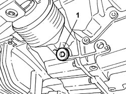
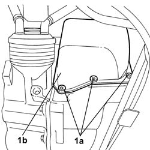
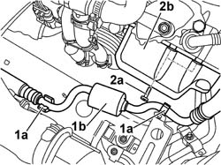
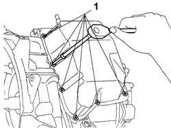

2130B36 Automatic transmission SOLENOID VALVE COVER - R.R.
- Path
- Procedures > 21 GEARBOX > 2130 AUTOMATIC TRANSMISSION AND DIFFERENTIAL > 2130B AUTOMATIC TRANSMISSION COMPONENTS > 2130B36 Automatic transmission SOLENOID VALVE COVER - R.R.
- Kind
- repair procedure (removal / refitting; the operation number is the code)
- Applies to
- engines: 2.4 20V; all production periods
- Interactive page
- https://sloeber94.github.io/elrnDB-lThss/en/#/842223
Applies to: engines: 2.4 20V; all production periods
 Removing
Removing
 Refitting
Refitting- Position the vehicle on a lift.
- Open the boot, remove the cover on the left hand side and disconnect the negative battery lead.
See in Op. 7040D50 ENGINE COMPARTMENT UPPER SOUND INSULATION SHIELD - R.R.
See in Op. 1016A40 Ignition COIL COVER on cylinder head - R.R.
See in Op. 1048A21 AIR INLET HOSE FROM INTAKE TO FILTER - R.R.
See in Op. 1048A23 Cold AIR INTAKE for air filter - R.R.
See in Op. 1048A28 vacuum air circuit resonator pipe - r+r
See in Op. 1048A10 COMPLETE AIR FILTER -R.R.
- Raise the vehicle on the lift.
See in Op. 7055B42 FRONT WHEEL ARCH LINER (one), left or right - R.R.
- Left side
See in Op. 7055B54 PROTECTION/GUARD under engine - R.R.
- Position a container to collect the automatic transmission fluid.
1. Undo the plug and drain the transmission fluid

Applies to: engines: 2.4 20V; all production periods
1. Undo the lower bolts (1a) fixing the solenoid valve unit cover (1b).

Applies to: engines: 2.4 20V; all production periods
- Lower the vehicle
1. Release the air conditioning system pipe (1b) from the retaining clips (1a)
2. Undo the upper bolts (2a) fixing the solenoid valve unit cover (2b) and remove it taking care not to damage the actual cover and the gearbox casing.

Applies to: engines: 2.4 20V; all production periods
Refitting
Removing- Clean any selant residues from the contact surfaces of the automatic transmission solenoid valve unit cover.
- Apply a bead of suitable silicon sealant 1.0 - 1.5 mm thick along the edge of the solenoid valve unit cover, removing any excees from inside the actual cover.
1. Place the gear selector solenoid valve unit cover back in its housing and secure it tightening the bolts to the recommended torque.
 | Value - daNm | Fastening | Component | Ø |
|---|---|---|---|---|
1 | 1.3 | Bolt | SOLENOID VALVE COVER FIXING, BOLT | M8 X 15 |

Applies to: engines: 2.4 20V; all production periods
- Secure the air conditioning system pipe to the retaining clips on the engine support frame.
- Position the gearbox oil plug
- Lower the vehicle
See in Op. 0010T44 AUTOMATIC TRANSMISSION FLUID - Change
See in Op. 1048A10 COMPLETE AIR FILTER -R.R.
See in Op. 1048A28 vacuum air circuit resonator pipe - r+r
See in Op. 1048A23 Cold AIR INTAKE for air filter - R.R.
See in Op. 1048A21 AIR INLET HOSE FROM INTAKE TO FILTER - R.R.
See in Op. 1016A40 Ignition COIL COVER on cylinder head - R.R.
See in Op. 7040D50 ENGINE COMPARTMENT UPPER SOUND INSULATION SHIELD - R.R.
See in Op. 7055B42 FRONT WHEEL ARCH LINER (one), left or right - R.R.
- Left side
See in Op. 7055B54 PROTECTION/GUARD under engine - R.R.
- Connect the negative battery lead, then close the boot.
- Remove the vehicle from the lift.
Topics linked from this page (9)
- 0010T44 AUTOMATIC TRANSMISSION FLUID - Change
- 1016A40 Ignition COIL COVER on cylinder head - R.R.
- 1048A10 COMPLETE AIR FILTER -R.R.
- 1048A21 AIR INLET HOSE FROM INTAKE TO FILTER - R.R.
- 1048A23 Cold AIR INTAKE for air filter - R.R.
- 1048A28 vacuum air circuit resonator pipe - r+r
- 7040D50 ENGINE COMPARTMENT UPPER SOUND INSULATION SHIELD - R.R.
- 7055B42 FRONT WHEEL ARCH LINER (one), left or right - R.R.
- 7055B54 PROTECTION/GUARD under engine - R.R.